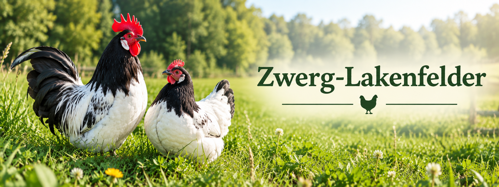

Ein elegantes Zwerghuhn mit auffälliger Schwarz-Weiß-Zeichnung

Das Zwerg-Lakenfelder ist die Zwergform des Lakenfelder Huhns und zählt zu den besonders auffälligen Hühnerrassen. Charakteristisch sind der schwarze Hals und Schwanz sowie der weiße Körper.
Die Rasse stammt ursprünglich aus Deutschland und den Niederlanden. Heute wird sie hauptsächlich von Hobbyzüchtern gehalten und auf Geflügelausstellungen gezeigt.
| Merkmal | Beschreibung |
|---|---|
| Herkunft | Deutschland und Niederlande |
| Farbe | Schwarz-Weiß |
| Besonderheit | Starker Farbkontrast |
| Charakter | Lebhaft und aufmerksam |
| Eier pro Jahr | ca. 120 |
| Typ | Zwerghuhn |
An den Zwerg-Lakenfeldern gefällt mir besonders ihre elegante Schwarz-Weiß-Zeichnung. Der starke Kontrast macht die Tiere bereits von Weitem gut erkennbar.
Außerdem wirken die Tiere trotz ihrer geringen Größe sehr elegant und sind ein echter Blickfang in meiner Zucht.
Farben spielen in der Medientechnik eine wichtige Rolle. Sie beeinflussen die Wahrnehmung von Bildern, Webseiten und anderen digitalen Medien.
Durch die richtige Kombination von Farben können Informationen hervorgehoben und die Aufmerksamkeit der Besucher gelenkt werden.
Ein Kontrast entsteht, wenn sich zwei Farben deutlich voneinander unterscheiden. Das Zwerg-Lakenfelder eignet sich hervorragend als Beispiel für einen starken Hell-Dunkel-Kontrast, da schwarzes und weißes Gefieder direkt nebeneinander auftreten.
Auch bei Webseiten werden Kontraste verwendet, damit Texte besser lesbar sind und wichtige Inhalte schneller erkannt werden können.
Farben können unterschiedliche Wirkungen auf den Betrachter haben. Helle Farben wirken oft freundlich und offen, während dunkle Farben eher seriös und elegant erscheinen.
Durch die Kombination von Schwarz und Weiß wirkt das Zwerg-Lakenfelder besonders kontrastreich und elegant.
Bei der Gestaltung einer Webseite werden Farben bewusst ausgewählt. Ein gut gewähltes Farbschema sorgt für Übersichtlichkeit und ein einheitliches Erscheinungsbild.
Für meine Webseite wurden natürliche Farbtöne gewählt, die zur Geflügelzucht passen. Dadurch entsteht ein harmonisches Design mit einem Bezug zur Natur.
body {
background-color: #F5F5DC;
}
h1 {
color: #4F7942;
}
Der Wert #F5F5DC steht beispielsweise für einen hellen
Beigeton. Durch solche Farbcodes können Farben in CSS exakt
festgelegt werden.
Die Farbtheorie ist ein wichtiger Bestandteil der Medientechnik. Farben beeinflussen die Wahrnehmung von Informationen und tragen wesentlich zur Benutzerfreundlichkeit und Gestaltung von Webseiten bei.
Durch den gezielten Einsatz von Farben können Inhalte besser strukturiert und hervorgehoben werden.
© Atina Rodler 21.04.2026